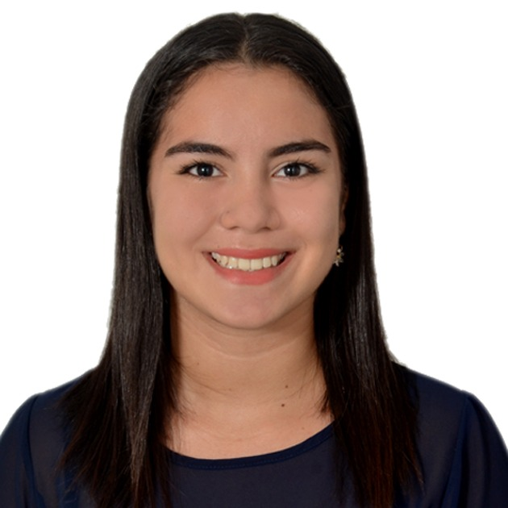
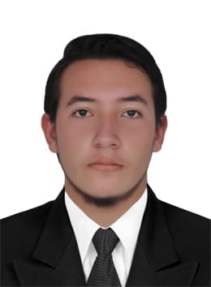
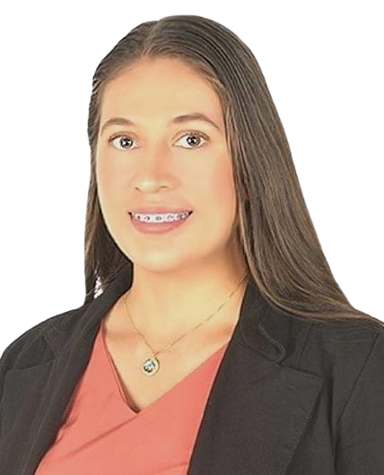

Ilyd Bautista
Invitada Especial
Jorge Enrique Chaparro Mesa
Unitrópico
Diego Páez Ardila
Invitado Especial

Eduardo Castillo Castañeda
Invitado Especial
Cristian Leandro Camargo Pinilla
Unitrópico
Laura Victoria Anzoategui González
Unitrópico
Daniel Alexander Galindo Pabón
Unitrópico
Dario Alejandro Cano Moreno
Unitrópico
Jeffry Slader Giraldo Perdomo.
Unitrópico
Edisson Steven Medina Solaque
Unitrópico

Lisseth Viviana Hernández Pinzón
Unitrópico
Juan Felipe Saenz Niño
Unitrópico
Nicolas Leonardo Leguizamo Daza
Unitrópico
Juan Sebastián Chaparro Garcia
Universidad de Boyacá
Arnold Julian Mesa Valcárcel
Unitrópico
Diego Armando Nieto Rodrigez
Unitrópico

Camilo Andrés Vargas Villamizar
Unitrópico

María Delia Aguilar Castellanos
Unisangil
William Andrés Galindo Zabala
Unitrópico
Gabriel Alexis Talero Tibaduiza
Unitrópico